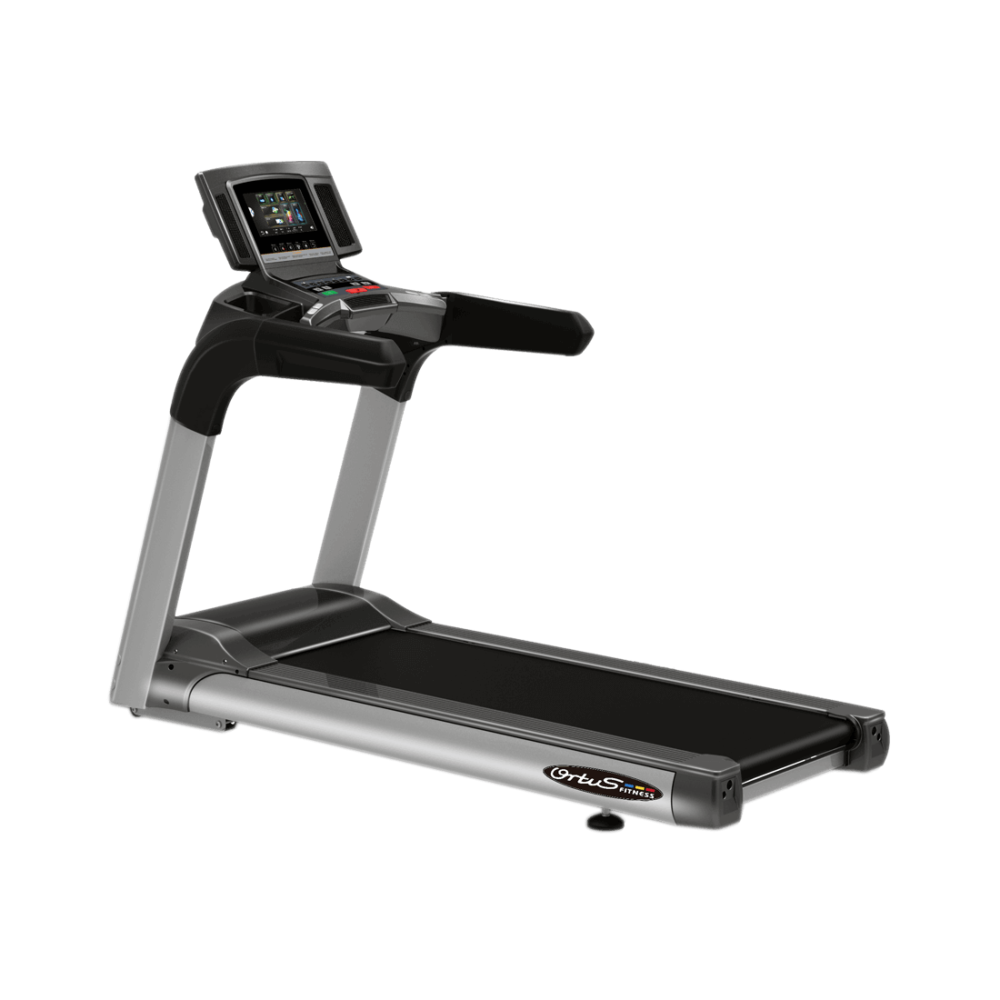
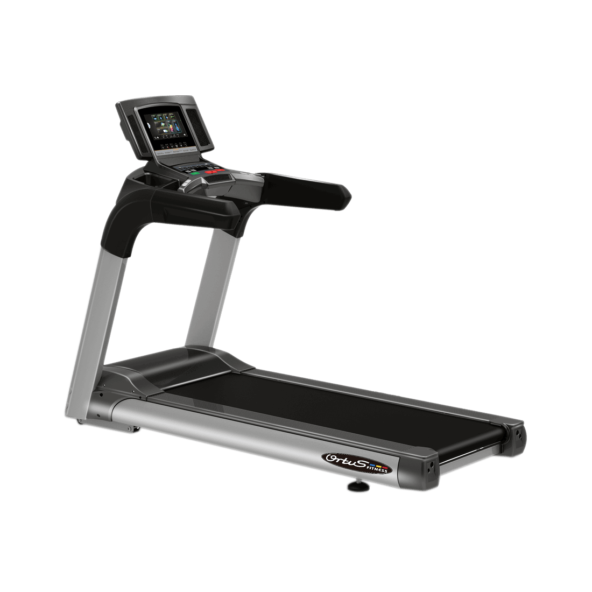
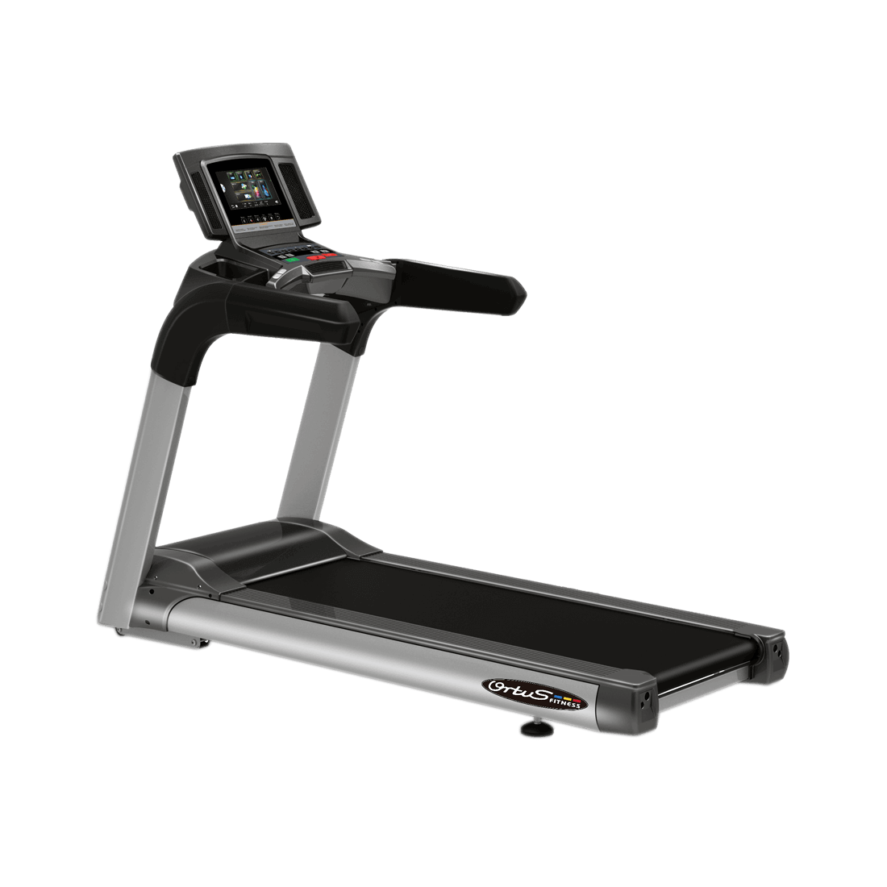
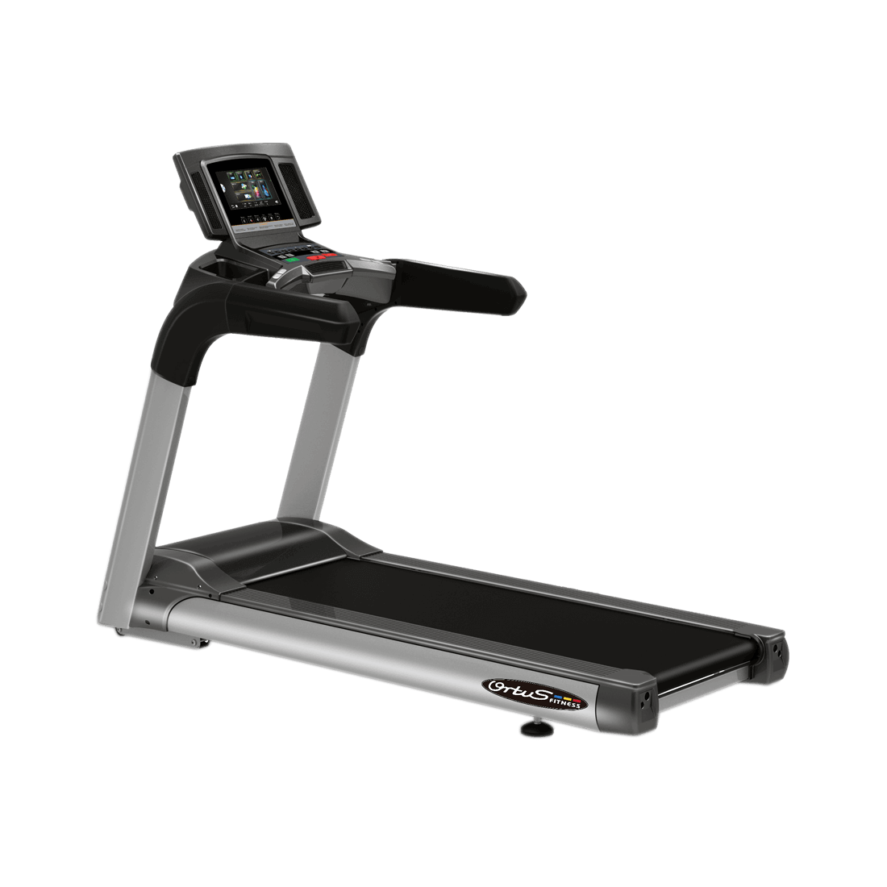
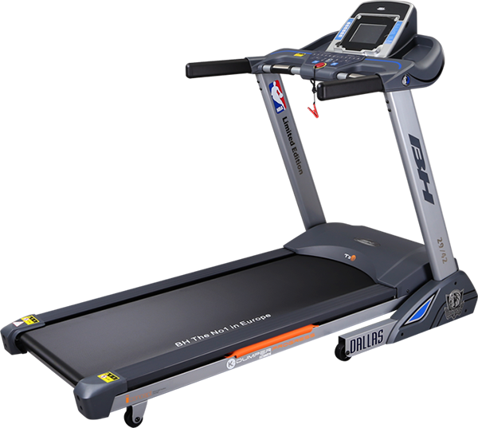
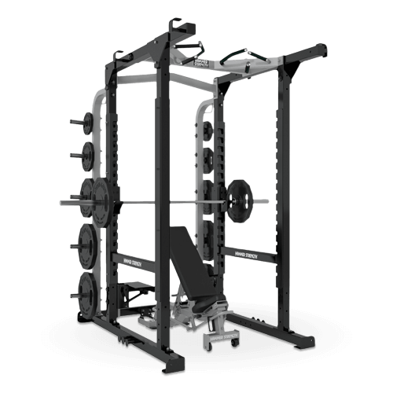

.png) 



En nuestro gimnasio contamos con una amplia variedad de equipos de cardio, incluyendo nuestras cintas de correr de alta calidad. Nuestras cintas de correr están diseñadas para soportar un uso intensivo y prolongado, ofreciendo una experiencia de ejercicio cardiovascular de alta calidad para todos nuestros usuarios. Cada una de nuestras cintas de correr cuenta con características y funciones avanzadas para mejorar el rendimiento y la comodidad durante el entrenamiento. Entre ellas, destacan las pantallas táctiles de alta resolución, que proporcionan acceso a diferentes programas de entrenamiento y estadísticas en tiempo real, y la tecnología de amortiguación avanzada que reduce el impacto en las articulaciones durante el ejercicio. Además, nuestras cintas de correr ofrecen una amplia variedad de programas de entrenamiento personalizados para adaptarse a las necesidades y objetivos de cada usuario, ya sea para mejorar la resistencia, quemar calorías o simplemente mantenerse activo. Todo ello, junto con su diseño robusto y resistente, hace que nuestras cintas de correr sean una excelente opción para trabajar el cardio en nuestro gimnasio.
En Capital Gym contamos con una amplia variedad de máquinas de entrenamiento de fuerza que son ideales para ganar musculatura y mejorar tu condición física. Cada una de nuestras máquinas está diseñada para brindar un entrenamiento de alta calidad y ofrecer una experiencia de fitness excepcional para nuestros usuarios. Nuestras máquinas de entrenamiento de fuerza están construidas con materiales de alta calidad y cuentan con características y tecnologías avanzadas para maximizar los resultados de tu entrenamiento. Desde máquinas para trabajar los brazos, piernas, pecho, espalda y abdominales, hasta equipos de entrenamiento funcional que mejoran la coordinación y el equilibrio, en Capital Gym tenemos todo lo que necesitas para alcanzar tus objetivos de fuerza y musculación. Además, nuestras máquinas de entrenamiento de fuerza ofrecen una gran variedad de ajustes y opciones de resistencia, lo que te permite personalizar tu entrenamiento según tus necesidades y objetivos específicos. Desde principiantes hasta atletas experimentados, todos pueden encontrar el equipo adecuado para su nivel de condición física y objetivo de entrenamiento en Capital Gym.
